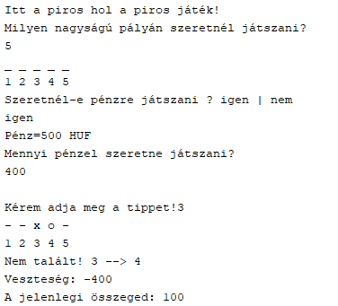
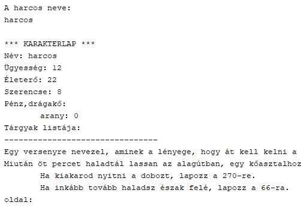
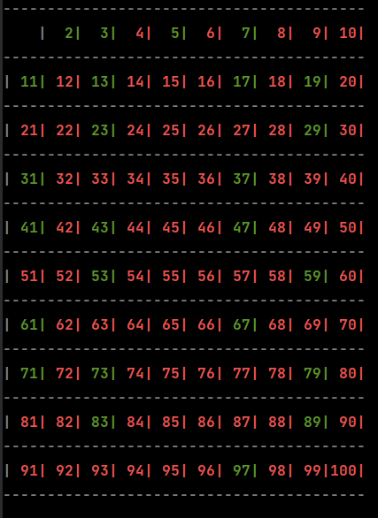
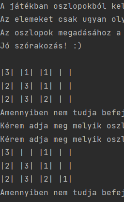

Programjaim
Ha futtatni szeretnéd a programokat akkor a .bat nevű fájlt kell futtatni.
Java
Itt a piros hol a piros
A feladat egy itt a piros hol a piros játékot létrehozni konzolos felületre. Dervalics Atillával és Ódor Norbertel dolgoztunk együtt.
ForráskódHalállabirintus
Népszerű szerepjátékos könyvek alapján kelett készíteni egy hasónló játékot amiben a játékos ugyan úgy döntéseket hozhatott és harcolni is lehetett.
ForráskódPython
Eratoszthenész prímszám szitája
A projekt munka lényege hogy konzolos felületen szemléltessük Eratoszthenész szitájának működését. Bánhidi Botondal és Berényi Péterrel készítettük.
ForráskódLogikai Játék
A lényege, hogy a játék végére egy csőben csak ugyan olyan elemek legyenek és csak azonos elemeket lehet egymásra rakni.Ódor Norbertel csináltuk
Forráskód